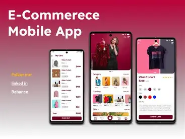
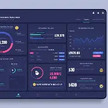

Halo, Saya Fariz Azka Zein
Fullstack Developer
Saya adalah seorang pengembang web dan iot yang antusias menciptakan solusi nyata dan digital kreatif. Berfokus pada performa kode dan pengalaman pengguna yang intuitif.
Pengalaman & Pendidikan
2022 - Sekarang
Web Designer
Bekerja di Perusahaan...
2020 - 2022
Web dan Iot Developer
Mengembangkan interface aplikasi mobile berbasis web dan perangkat pintar iot.
2018 - 2020
Software and Hardware Specialization
Meminati proyek yang menggabungkan perangkat lunak dan keras.
Project Terbaru

E-Commerce App
Aplikasi toko online dengan sistem integrasi payment gateway dan pelacakan stok otomatis.
Lihat Detail

Personal Finance Tracker
Dashboard untuk memantau pengeluaran bulanan dengan visualisasi grafik interaktif.
Lihat Detail.webp)
Iot Project
IoT adalah jaringan perangkat fisik yang saling terhubung melalui internet, seperti sensor, kamera, lampu pintar, dan speaker pintar. Tujuannya adalah membuat hidup lebih efisien dengan otomatisasi dan kontrol jarak jauh.
Lihat Detail